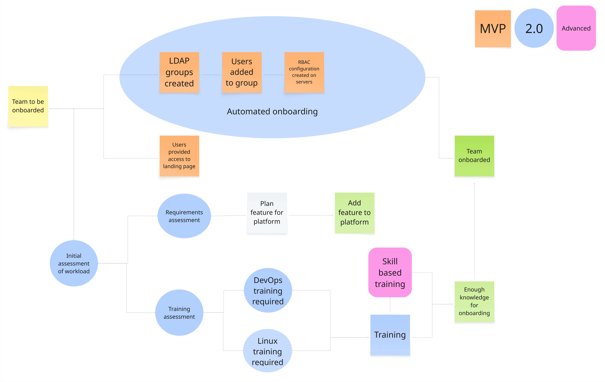
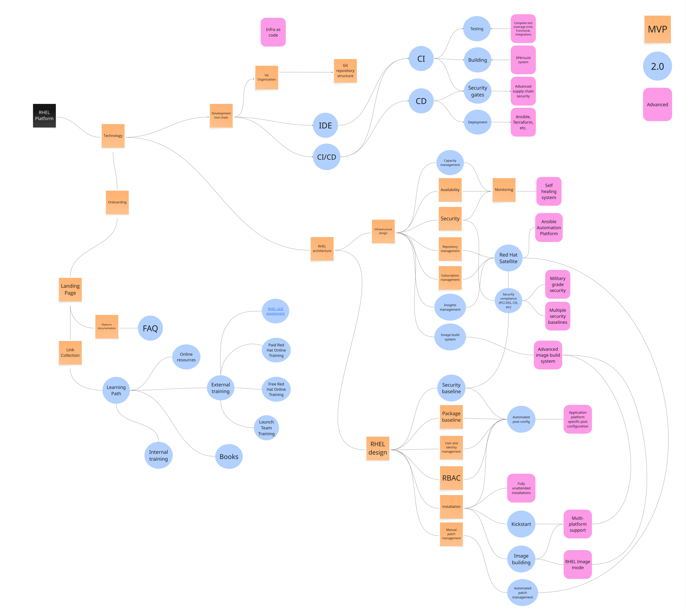

Operational Model - RHEL - Minimal Viable Product
If you are wonder what an operational model is, you should start by reading this introduction.
People
Overview of the people section. Zoom into this picture for details.

- It is common that the people who operate and maintain the platform has other jobs and do not work dedicated on the platform. Even though we do not yet require a dedicated platform owner or platform engineering team, we should already start thinking about that.
Community of practice
There are many different names for this, for example Centre of Excellence, DevOps Dojo, or etc. It's simply a community which you build around your platform. Here we describe resources related to people and your community.
- Community of practice core team - This is commonly made up by the product owner and platform engineers, but as you have created a community of practice (devops dojo, center of excellence, etc), you may want to invite some people from your community to take on leading roles.
- Community of practice members - The community consists of people who are interested in automation and your platform. You gotta catch em all to get get a strong and growing community, but it's good to start small, as there is a lot to learn here.
- Chat channel - Community of pratice members needs a place where they can talk to each other.
- Re-ocurring meeting - Schedule a meeting every other week or weekly, where people can share and interact with each other.
Process
Overview of the process section. Zoom into this picture for details.
RHEL Platform processes
Processes related to the Red Hat Enterprise Linux standard platform itself.
- Disaster recovery - We ensure we have a functioning process for Disaster Recovery. When sigificant parts of the organization depends on our platform, we need this. This is a fairly complicated process it relates to rebuilding your complete RHEL standard platform, including potential systems you use to create it with, depending on what disaster scenario you are mitigating.
- Upgrading - It's now time for you to get a dedicated process for how to manage upgrades between major releases of Red Hat Enterprise Linux. There are many options available, either by using LEAPP or by having an approach where you install new servers which you then migrate to.
- Automated onboarding - The process for onboarding should be an automated one, this allows us to quickly onboard new teams and reduce shadow IT created by people tired of waiting for things.
- Assessment of teams and workloads - When you onboard new teams it's important that you do some type of assessment of what type of workload will run on their servers. Workloads are an important source of requirements for things such as availability, capacity and security. You can start small and simply just interview new teams, or have them submit some standard information as a part of the onboarding process.
- Training - You now do standard training for people who you onboard. What is that standard training? You decide.
Onboarding process
- Automatic onboarding - n order to speed up the onboarding process, it is key that you automate as much as possible. This will also decrease the risk that something is not properly configured, such as RBAC configuration in AAP. It's important that people do not have to wait too long, as that risks create shadow IT, where people simply install Linux themselves.
An overview of a common onboarding process can be viewed below. Please note that the graphics describes all three advancement levels of onboarding.

The steps for the 2.0 version of the onboarding process follows: * Automated onboarding - Configuration required to provide access to a new team is performed automatically. This includes creation of LDAP groups, adding users and configuring systems to provide access to the newly onboarded team. * Initial assessment of workload - As new team are onboarded you need to do assessments of the team and their workloads to be able to provide a good service and speed up adoption. * Requirements assessment - Ask the team some simple questions related to what they will actually run on their Linux instances. Depending on what they answer, it may be good to add new features to your platform, to support their workload. As an example, if the team requires PCI DSS compliance, you may add PCI DSS hardening in your Red Hat Enterprise Linux standard, and get Red Hat Satellite to get simplified compliance reporting. * Training assessment - Just providing someone a tool, without any instructions about how to use it will hurt standardization and securiry and can create all sorts of long term challenges. Assess what type of training the new team needs. * DevOps training required - It is common that newly onboarded teams needs training related to modern practices to manage Linux, this may include things such as: version control, testing, CI/CD and such. This will be key for them to understand. If you fail to catch this type of training requirement that will negatively impact overall standardization for your installed base. * Linux training required - Does the team getting onboarded need training related to how Red Hat Enterprise Linux works? It's good if you have some hands-on training regarding that, as an operating system is a complicated thing which no person can be expected to understand without training. * Training - This is the delivery of the training. If you cannot deliver this yourself, many companies, including Red Hat - has training available.
Development processes
Processes related to the development of your RHEL platform.
- Documentation - You have requirements related to what you should document regarding your platform features.
- External contributions - How do people outside of the RHEL platform team contribute features to the standard? That should be allowed as it creates cross team collaboration and puts the users of RHEL in the driving seat for the standard they use.
- Testing - When you have developed a new feature in your RHEL standard, how do you test it? Initially this may be a semi-manual process, where you do an installation and see if it was successful. As you move forward, this will have to be automated.
- CI/CD - In order to automate your development processes, you need CI/CD. But how do you work with CI/CD? That is what this process describes.
- RHEL best practices - It's common that you have a standard for how to write a programming language, based on best practices. In the same way, there are best practices for how to do things in Red Hat Enterprise Linux. Sit down and consider what design principles and best practices are and then document it. This will help people who contributes to your standard as well.
Technology
Overview of the technology section. Zoom into this picture for details.

RHEL architecture
Architectural decisions related to Red Hat Enterprise Linux.
Infrastructure design
Infrastructure related decisions.
- Capacity mangement - What happens if a system runs out of resources such as CPU, memory, disk or even network bandwidth? Design your standard so that you can easily extend these resources. This commonly requires some cross-team collaboration with teams who manages these resources.
- Insights management - Red Hat Insights is included in each RHEL subscription. It provides you with a host of information. About the patch state of systems, known vulnerabilities. Also, are you tired of working reactively? It can also provide you advise on how to work proactively to ensure that issues which may become problems - does not.
- Image build system - If you install RHEL by creating a system from an image, such as virtual machine template or etc, then you will need a system dedicated to building such images. Also, if you are to use Red Hat Enterprise Linux Image Mode (RHEL 9.6+, 10+), you will need a system to build those images. Learn more about that here.
- Red Hat Satellite - It's not uncommon that this is something you get immediately for your first release, and there are some good reasons for that. Red Hat Satellite helps with a host of challenges related to subscription management, repository management, automation and compliance reporting. Learn more about Red Hat Satellite, here.
- Security compliance (PCI DSS, CIS, etc) - Sooner or later, most organizations needs to comply with some specific security standard. For you, that likely means you need to cater for that, including providing hardening and compliance reporting for your RHEL platform. But how? You can for example use Red Hat Satellite and Ansible Automation Platform for this.
RHEL design
Design of your Red Hat Enterprise Linux standard.
- Security baseline - Before you have hundreds of RHEL servers installed, you should create a security baseline which hardens the security posture of you platform. This may also include specific hardening profiles you create for specific security compliance with standards such as PCI DSS, CIS, HIPAA, etc.
- Automated post config - All the things which you have done manually after installing RHEL, are now things which you need to automate. If you do not do this, you will not be able to scale your install base without some very significant issues. This is also how you can make the consumption of your standard simpler than running off to some cloud provider, by applying all needed configuration for a specific system - automatically. This is also key as it relates to security compliance and hardening - that it is done immediately as the system is created.
- Kickstart - If you are installing a lot of systems on baremetal servers, it's time for you to consider automating that. If you cannot use image based installations, you will for Red Hat Enterprise Linux use kickstart to accomplish this. Red Hat Satellite supports kickstart installations, if you do not have a system for this already.
- Image building - If you are delivering your standard in the form of virtual machine or container images, then you to design your standard for these purposes.
- Automated patch management - In order to be able to scale your install base to serveral hundreds of systems - while you at the same time patch these systems on a regular basis - you need automated patch management. Systems such as Red Hat Satellite or Ansible Automation Platform can help you accomplish this.
Development tool chain
Features related to the development tool chain.
- IDE - This is not a hard requirement, but if you standardize what Integrated Development Environment (VSCode, vim, etc), then that may help people later on as you perform more and more development type tasks in the maintenence of your platform.
- CI/CD - In order to automate your development processes, you need CI/CD. But what CI/CD platform should you use for this? Decide!
- Testing - Decide how you will technically perform tests of you RHEL standard platform. Will you use some automation which installs your standard on a loop and does some integration tests after each loop? Do you have some standard test platform which should be used? Being able to prove that your standard is intact as you release new version of it is vital for almost any advanced features, so don't skip this.
- Building - As it relates to shipping software to RHEL, if you are not using containers, you should be using RPMs. The challenge is that not many people know how to build RPMs, so it may be a good thing for you to provide a system where users of the platform can more easily build their RPMs.
- Security gates - Related to the creation of your standard, it's increasingy a common requirement that you have secured the development process. This is done by introducing security gates which for example automatically signs or cryptographically validates resources built or used.
- Deployment For you to be able to automatically test your standard, it needs to be deployed automatically. But how? Perhaps using some automation tool, such as Ansible or Terraform - which are triggered from your RHEL Platform development CI/CD pipeline.
Onboarding
Technology implementations related to onboarding.
- Landing page - When someone gets onboarded to your platform. They need a place to start their onboarding process. This is typically a wiki page or webpage maintained by the core platform team.
- Platform documentation - A common part of a technical platform implementation, you have documentation which decribes to other people how the platform works.
- Link collection - A good way to help people who get onboarded is by maintaining a list of useful links.
Platform management
Overview of the platform management section. Zoom into this picture for details.
Administrative features which helps with the development or maintenence of the platform.
- RHEL Success Plan - There is a basic success plan in place for the platform, outlining what KPIs we want to impact. We are often lacking performance monitoring for these KPIs.
- KPIs (Master doc) - You have a document describing KPIs which we monitor, if they are not a part of the overall AAP success plan.